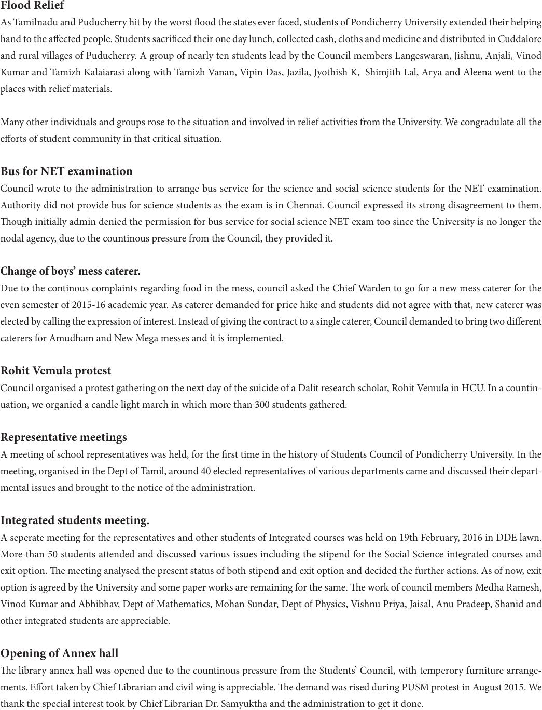

Flood Relief
As Tamilnadu and Puducherry hit by the worst ood the states ever faced, students of Pondicherry University extended their helping
hand to the aected people. Students sacriced their one day lunch, collected cash, cloths and medicine and distributed in Cuddalore
and rural villages of Puducherry. A group of nearly ten students lead by the Council members Langeswaran, Jishnu, Anjali, Vinod
Kumar and Tamizh Kalaiarasi along with Tamizh Vanan, Vipin Das, Jazila, Jyothish K, Shimjith Lal, Arya and Aleena went to the
places with relief materials.
Many other individuals and groups rose to the situation and involved in relief activities from the University. We congradulate all the
eorts of student community in that critical situation.
Bus for NET examination
Council wrote to the administration to arrange bus service for the science and social science students for the NET examination.
Authority did not provide bus for science students as the exam is in Chennai. Council expressed its strong disagreement to them.
ough initially admin denied the permission for bus service for social science NET exam too since the University is no longer the
nodal agency, due to the countinous pressure from the Council, they provided it.
Change of boys’ mess caterer.
Due to the continous complaints regarding food in the mess, council asked the Chief Warden to go for a new mess caterer for the
even semester of 2015-16 academic year. As caterer demanded for price hike and students did not agree with that, new caterer was
elected by calling the expression of interest. Instead of giving the contract to a single caterer, Council demanded to bring two dierent
caterers for Amudham and New Mega messes and it is implemented.
Rohit Vemula protest
Council organised a protest gathering on the next day of the suicide of a Dalit research scholar, Rohit Vemula in HCU. In a countin-
uation, we organied a candle light march in which more than 300 students gathered.
Representative meetings
A meeting of school representatives was held, for the rst time in the history of Students Council of Pondicherry University. In the
meeting, organised in the Dept of Tamil, around 40 elected representatives of various departments came and discussed their depart-
mental issues and brought to the notice of the administration.
Integrated students meeting.
A seperate meeting for the representatives and other students of Integrated courses was held on 19th February, 2016 in DDE lawn.
More than 50 students attended and discussed various issues including the stipend for the Social Science integrated courses and
exit option. e meeting analysed the present status of both stipend and exit option and decided the further actions. As of now, exit
option is agreed by the University and some paper works are remaining for the same. e work of council members Medha Ramesh,
Vinod Kumar and Abhibhav, Dept of Mathematics, Mohan Sundar, Dept of Physics, Vishnu Priya, Jaisal, Anu Pradeep, Shanid and
other integrated students are appreciable.
Opening of Annex hall
e library annex hall was opened due to the countinous pressure from the Students’ Council, with temperory furniture arrange-
ments. Eort taken by Chief Librarian and civil wing is appreciable. e demand was rised during PUSM protest in August 2015. We
thank the special interest took by Chief Librarian Dr. Samyuktha and the administration to get it done.